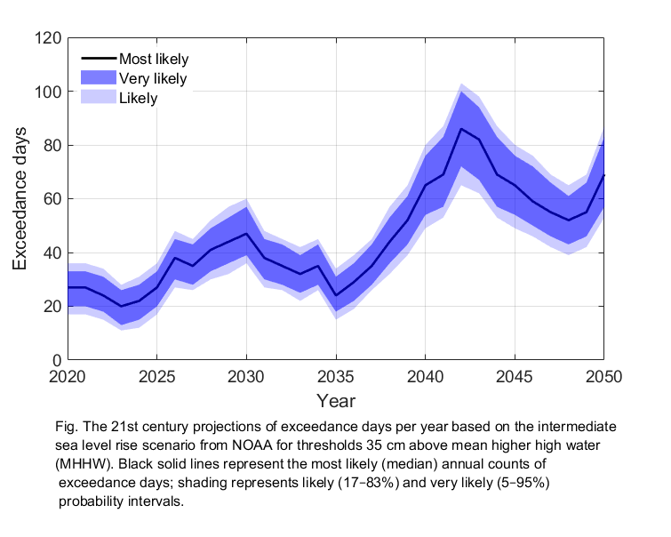

<!--<p> hello world <p>
<p>  I am sida, the host of this page <p>
-->
<<!DOCTYPE html>
<html lang="en" dir="ltr">
  <head>
    <meta charset="utf-8">
    <title> i am so sad  </title>

  </head>
  <body>
      <h1 class="h1">Sida Test<h1>

      <link rel="stylesheet" href="https://unpkg.com/leaflet@1.7.1/dist/leaflet.css"
        integrity="sha512-xodZBNTC5n17Xt2atTPuE1HxjVMSvLVW9ocqUKLsCC5CXdbqCmblAshOMAS6/keqq/sMZMZ19scR4PsZChSR7A=="
        crossorigin=""/>

      <!-- Make sure you put this AFTER Leaflet's CSS -->
      <script src="https://unpkg.com/leaflet@1.7.1/dist/leaflet.js"
        integrity="sha512-XQoYMqMTK8LvdxXYG3nZ448hOEQiglfqkJs1NOQV44cWnUrBc8PkAOcXy20w0vlaXaVUearIOBhiXZ5V3ynxwA=="
        crossorigin="">

      </script>

      <div id="mapid" style="height:580px;"></div>
      <<script>
        var mymap = L.map('mapid').setView([50, -92], 13);
        L.tileLayer('https://api.mapbox.com/styles/v1/{id}/tiles/{z}/{x}/{y}?access_token={accessToken}', {
          attribution: 'Map data &copy; <a href="https://www.openstreetmap.org/">OpenStreetMap</a> contributors, <a href="https://creativecommons.org/licenses/by-sa/2.0/">CC-BY-SA</a>, Imagery ? <a href="https://www.mapbox.com/">Mapbox</a>',
          maxZoom: 18,
          id: 'mapbox/streets-v11',
          tileSize: 512,
          zoomOffset: -1,
          accessToken: 'pk.eyJ1Ijoic2RsaWN1bXQiLCJhIjoiY2toaGFlY2c0MWM1eDJwdDlqdHhicWR1eSJ9.c6mEkntr7uxLuBVTNPLo9g'
          }).addTo(mymap);

        var marker = L.marker([34.5967,-92]).addTo(mymap);
        var marker1 = L.marker([34.71, -92]).addTo(mymap);
        var circle = L.circle([36.49, -92], {
            color: 'red',
            fillColor: '#f03',
            fillOpacity: 0.5,
            radius: 500
        }).addTo(mymap);

       marker.bindPopup("< <").openPopup(); 

<!--        marker1.bindPopup("<b>这是新埔街</b><br><a href='http://www.weather.com.cn/weather/101191001.shtml'>点击进入</a><br> <").openPopup(); -->
        marker1.bindPopup("<b>这是新埔街</b><br><a href='myDataFile1.csv' >点击进入</a><br> <").openPopup();
        circle.bindPopup("I am a circle.");
        var marker3 = L.marker([46.2,-123.77]).addTo(mymap);
        marker3.bindPopup("<b>Astoria, OR</b>").openPopup();
        var marker4 = L.marker([44.39,-68.2]).addTo(mymap);
        marker4.bindPopup("<b>Bar Harbor, ME</b>").openPopup();
        var marker5 = L.marker([41.72,-124.18]).addTo(mymap);
        marker5.bindPopup("<b>Crescent City, CA</b>").openPopup();
        var marker6 = L.marker([44.9,-66.98]).addTo(mymap);
        marker6.bindPopup("<b>Eastport, ME</b>").openPopup();
        var marker7 = L.marker([48.53,-123]).addTo(mymap);
        marker7.bindPopup("<b>Friday Harbor, WA</b>").openPopup();
        var marker8 = L.marker([33.72,-118.27]).addTo(mymap);
        marker8.bindPopup("<b>Los Angeles, CA</b>").openPopup();
        var marker9 = L.marker([48.38,-124.6]).addTo(mymap);
        marker9.bindPopup("<b>Neah Bay, WA</b>").openPopup();
        var marker10 = L.marker([30.4,-87.2]).addTo(mymap);
        marker10.bindPopup("<b>Pensacola, FL</b>").openPopup();
        var marker11 = L.marker([35.16,-120.75]).addTo(mymap);
        marker11.bindPopup("<b>Port San Luis, CA</b>").openPopup();
        var marker12 = L.marker([32.7,-117.17]).addTo(mymap);
        marker12.bindPopup("<b>San Diego, CA</b>").openPopup();
        var marker13 = L.marker([39,-76.5]).addTo(mymap);
        marker13.bindPopup("<b>Annapolis, MD</b>").openPopup();
        var marker14 = L.marker([29.7,-85]).addTo(mymap);
        marker14.bindPopup("<b>Apalachicola, FL</b>").openPopup();
        var marker15 = L.marker([39.4,-74.4]).addTo(mymap);
        marker15.bindPopup("<b>Atlantic City, NJ</b>").openPopup();
        var marker16 = L.marker([39.3,-76.6]).addTo(mymap);
        marker16.bindPopup("<b>Baltimore, MD</b>").openPopup();
        var marker17 = L.marker([30.3,-89.3]).addTo(mymap);
        marker17.bindPopup("<b>Bay Waveland, MS</b>").openPopup();
        var marker18 = L.marker([34.7,-76.7]).addTo(mymap);
        marker18.bindPopup("<b>Beaufort, NC</b>").openPopup();
        var marker19 = L.marker([40.6,-74.1]).addTo(mymap);
        marker19.bindPopup("<b>Bergen Point, NY</b>").openPopup();
        var marker20 = L.marker([42.4,-71.1]).addTo(mymap);
        marker20.bindPopup("<b>Boston, MA</b>").openPopup();
        var marker21 = L.marker([41.2,-73.2]).addTo(mymap);
        marker21.bindPopup("<b>Bridgeport, CT</b>").openPopup();
        var marker22 = L.marker([38.6,-76.1]).addTo(mymap);
        marker22.bindPopup("<b>Cambridge, MD</b>").openPopup();
        var marker23 = L.marker([39,-75]).addTo(mymap);
        marker23.bindPopup("<b>Cape May, NJ</b>").openPopup();
        var marker24 = L.marker([29.1,-83]).addTo(mymap);
        marker24.bindPopup("<b>Cedar Key, FL</b>").openPopup();
        var marker25 = L.marker([32.8,-79.9]).addTo(mymap);
        marker25.bindPopup("<b>Charleston, SC</b>").openPopup();
        var marker26 = L.marker([37,-76.1]).addTo(mymap);
        marker26.bindPopup("<b>Chesapeake Bay , VA</b>").openPopup();
        var marker27 = L.marker([27.6,-97.2]).addTo(mymap);
        marker27.bindPopup("<b>Corpus Christi, TX</b>").openPopup();
        var marker28 = L.marker([36.2,-75.7]).addTo(mymap);
        marker28.bindPopup("<b>Duck, NC</b>").openPopup();
        var marker29 = L.marker([30.7,-81.5]).addTo(mymap);
        marker29.bindPopup("<b>Fernandina Beach, FL</b>").openPopup();
        var marker30 = L.marker([29.3,-94.8]).addTo(mymap);
        marker30.bindPopup("<b>Galveston Pier 21, TX</b>").openPopup();
        var marker31 = L.marker([40.8,-124.2]).addTo(mymap);
        marker31.bindPopup("<b>Humboldt Bay, CA</b>").openPopup();
        var marker32 = L.marker([24.6,-81.8]).addTo(mymap);
        marker32.bindPopup("<b>Key West, FL</b>").openPopup();
        var marker33 = L.marker([37.2,-76]).addTo(mymap);
        marker33.bindPopup("<b>Kiptopeke, VA</b>").openPopup();
        var marker34 = L.marker([32.9,-117.3]).addTo(mymap);
        marker34.bindPopup("<b>La Jolla, CA</b>").openPopup();
        var marker35 = L.marker([38.8,-75.1]).addTo(mymap);
        marker35.bindPopup("<b>Lewes, DE</b>").openPopup();
        var marker36 = L.marker([38,-76.5]).addTo(mymap);
        marker36.bindPopup("<b>Lewisetta, VA</b>").openPopup();
        var marker37 = L.marker([30.4,-81.4]).addTo(mymap);
        marker37.bindPopup("<b>Mayport, FL</b>").openPopup();
        var marker38 = L.marker([41,-72]).addTo(mymap);
        marker38.bindPopup("<b>Montauk, NY</b>").openPopup();
        var marker39 = L.marker([41.3,-70.1]).addTo(mymap);
        marker39.bindPopup("<b>Nantucket Island, MA</b>").openPopup();
        var marker40 = L.marker([26.1,-81.8]).addTo(mymap);
        marker40.bindPopup("<b>Naples, FL</b>").openPopup();
        var marker41 = L.marker([41.4,-72.1]).addTo(mymap);
        marker41.bindPopup("<b>New London, CT</b>").openPopup();
        var marker42 = L.marker([32,-80.9]).addTo(mymap);
        marker42.bindPopup("<b>Fort Pulaski, GA</b>").openPopup();
        var marker43 = L.marker([30.2,-85.7]).addTo(mymap);
        marker43.bindPopup("<b>Panama City, FL</b>").openPopup();
        var marker44 = L.marker([39.9,-75.1]).addTo(mymap);
        marker44.bindPopup("<b>Philadelphia, PA</b>").openPopup();
        var marker45 = L.marker([26.1,-97.2]).addTo(mymap);
        marker45.bindPopup("<b>Port Isabel, TX</b>").openPopup();
        var marker46 = L.marker([48.1,-122.8]).addTo(mymap);
        marker46.bindPopup("<b>Port Townsend, WA</b>").openPopup();
        var marker47 = L.marker([43.7,-70.2]).addTo(mymap);
        marker47.bindPopup("<b>Portland, ME</b>").openPopup();
        var marker48 = L.marker([41.8,-71.4]).addTo(mymap);
        marker48.bindPopup("<b>Providence, RI</b>").openPopup();
        var marker49 = L.marker([39.6,-75.6]).addTo(mymap);
        marker49.bindPopup("<b>Reedy Point, DE</b>").openPopup();
        var marker50 = L.marker([28,-97]).addTo(mymap);
        marker50.bindPopup("<b>Rockport, TX</b>").openPopup();
        var marker51 = L.marker([29.7,-93.9]).addTo(mymap);
        marker51.bindPopup("<b>Sabine Pass, TX</b>").openPopup();
        var marker52 = L.marker([37.8,-122.5]).addTo(mymap);
        marker52.bindPopup("<b>San Francisco, CA</b></br>").openPopup();

        var marker53 = L.marker([40.5,-74]).addTo(mymap);
        marker53.bindPopup("<b>Sandy Hook, NJ</b>").openPopup();


        var marker54 = L.marker([47.6,-122.3]).addTo(mymap);
        marker54.bindPopup("<b>Seattle, WA</b>").openPopup();
        var marker55 = L.marker([36.9,-76.3]).addTo(mymap);
        marker55.bindPopup("<b>Sewells Point, VA</b>").openPopup();
        var marker56 = L.marker([38.3,-76.5]).addTo(mymap);
        marker56.bindPopup("<b>Solomons Island, MD</b>").openPopup();
        var marker57 = L.marker([44.6,-124]).addTo(mymap);
        marker57.bindPopup("<b>South Beach, OR</b>").openPopup();
        var marker58 = L.marker([33.7,-78.9]).addTo(mymap);
        marker58.bindPopup("<b>Springmaid Pier, SC</b>").openPopup();
        var marker59 = L.marker([27.8,-82.6]).addTo(mymap);
        marker59.bindPopup("<b>St. Petersburg, FL</b>").openPopup();
        var marker60 = L.marker([40.7,-74]).addTo(mymap);
        marker60.bindPopup("<b>The Battery, NY</b>").openPopup();
        var marker61 = L.marker([46.7,-124]).addTo(mymap);
        marker61.bindPopup("<b>Toke Point,WA</b>").openPopup();
        var marker62 = L.marker([24.7,-81.1]).addTo(mymap);
        marker62.bindPopup("<b>Vaca Key, FL</b>").openPopup();
        var marker63 = L.marker([37.6,-75.7]).addTo(mymap);
        marker63.bindPopup("<b>Wachapreague, VA</b>").openPopup();
        var marker64 = L.marker([38.9,-77]).addTo(mymap);
        marker64.bindPopup("<b>Washington, DC</b>").openPopup();
        var marker65 = L.marker([34.2,-78]).addTo(mymap);
        marker65.bindPopup("<b>Wilmington, NC</b>").openPopup();
        var marker66 = L.marker([41.5,-70.7]).addTo(mymap);
        marker66.bindPopup("<b>Woods Hole, MA</b>").openPopup();
        var marker67 = L.marker([41.5,-71.3]).addTo(mymap);
        marker67.bindPopup("<b>Newport, RI</b>").openPopup();
        var marker68 = L.marker([40.8,-73.8]).addTo(mymap);
        marker68.bindPopup("<b>Willets Point, NY</b>").openPopup();


      </script>

      <<p> how to read txt
        <script>


        </script>

      </p>


  </body>
</html>>
